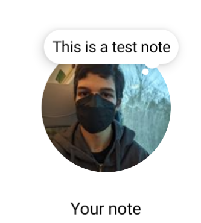
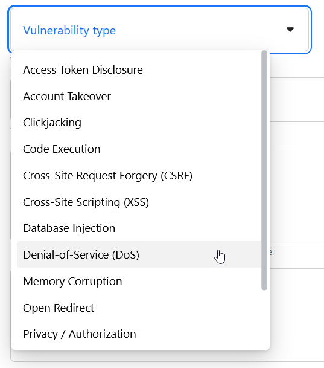

A few weeksmonths ago, Instagram, the social network that loves to throw a new (or stolen) idea
at the wall every couple days, added a new feature called "Notes". In case you're
reading this in the future long after Instagram killed Notes because nobody was using them (or you just don't use Instagram), Notes
are short 60-character text-only posts that only your mutual followers can see,
that show up at the top of your DMs page. You can only post one Note at a time,
and they get deleted 24 hours after you post them.
There was a bit of excitement over the Notes feature when they first came out, but it died down pretty quickly. I don't think I've seen a new Note posted in several days. Maybe it's because the 60-character limit is a little too restrictive and people just don't have that much to say in 60 characters, or maybe the rollout was a bit too messy. Whenever an app like Instagram rolls out a significant New Thing — be it a new feature, a redesign of some interface, or something else along those lines — they like to roll it out to a random selection of their users first, to make sure they like it (they'll probably use telemetry and bug reports from the app to make sure everything's working correctly and people can still use the app). This practice is called A/B testing, and it's much cheaper than hiring a team of testers, so naturally Instagram uses it a little too much. Notes, for example, are meant to be a social feature — they don't work great if you post something and half of your friends can't even see it. But A/B testing seems to be part of the Instagram formula, so of course, when Notes rolled out, many accounts weren't even able to see them.
I was chatting with a friend who was frustrated at not being able to use Notes, and started wondering whether it was possible to read people's Notes without the app having the feature enabled. The app is just a client — when you open the DM page with the notes at the top, all the app does is send a request to the Instagram server asking to see all of your friends' notes. What I was hoping is that if I could write a program to send that same request, the Instagram server would send me the notes, thinking I was the app, regardless of whether Instagram had decided to enable the feature for me. My hope was that instead of flat-out disabling the Notes feature, Instagram had just changed some hidden setting in the client apps so that they would never request Notes, and the server would just assume that whoever requests to see Notes would be a client with Notes enabled and just send over the Notes without asking too many questions.
I decided to test this out. I had Notes enabled on my main account, but I had a test account left over from a previous project that didn't seem to have Notes enabled. The first step was to see what kind of request the Instagram app was sending to the server, so that I could replicate it. Instagram, like most apps, uses HTTP requests to communicate with its server, and an HTTP request has three important parts that I need to know in order to replicate it:
-
The request type: this is a short verb that signifies what the request is doing. For example, a
GETrequest is usually used to get data from a server, and aPOSTrequest is usually used to post data to a server. Since we are getting data, there's a very good chance that this will be aGETrequest, unless Facebook wanted to be deliberately confusing (you'd think this never happens, but some websites are extremely poorly designed). - The URL: this indicates which specific part of the website or service you want to request. In this case, there's probably a specific URL for getting notes.
- The data: this is any additional data that the server needs in order to carry out the request. For example, the server will probably need some sort of login information to make sure we're not trying to read the notes from someone else's account. (There are several ways of providing data, but it all has the same purpose).
HTTP requests are used all over the place. For example, your web browser used one to get the article you're reading right now:
-
The request type was
GET, since your web browser was getting the article. -
The URL was
david.industries/notes/notes.html, which specifies the server (david.industries) and tells it which article you want to read (/notes/notes.html). - My website doesn't really need any data, but your web browser will send some data to every website just in case it finds it useful — like which OS and web browser you're using, or the current date and time.
So I needed to be able to see the requests the Instagram app was sending to the server. This is easy if you're using a website: every web browser (at least on desktop computers) lets you see which requests it's sending if you right-click on the page, click Inspect Element, then go to the Network tab. (You can try this yourself and check for the things I mentioned above). Unfortunately, Instagram Notes weren't enabled yet on the Instagram website — they were only on the iOS and Android apps. This meant I had to find a way to see the requests that were being sent from my phone.
I did some digging and found a handy tool called HTTP Toolkit that let me do just that. So I connected my phone to HTTP Toolkit on my laptop and tried loading Instagram's notes page on my phone, but I wasn't getting any useful data.
The issue, as it turns out, was the encryption. Like most apps, Instagram encrypts its HTTP requests using a scheme called TLS, or transport-layer security (this system as a whole is often referred to as HTTPS). Encryption is important for preventing people from spying on what you're doing online: for example, without encryption, if you were to connect to a public Wi-Fi network, whoever owns that network would be able to see every detail of every HTTP request you send. This includes usernames, passwords, and every bit of private data that you access online. With TLS encryption, every HTTP request you send is encrypted in a way such that only the server can decrypt it. This means someone who's not supposed to access this data, such as the public Wi-Fi owner, can't access it.
How can you encrypt something in a way that only the server can decrypt it? You use one of the most important tools in computer science: public-key cryptography. The idea is that the server generates two keys: a public key and a private key. You can use the public key to encrypt data, but you can only decrypt that data with the private key. The server will send you the public key to encrypt your HTTP requests with, but it will never send the private key to anyone. This means if you encrypt a message with the public key that the server sends you, and then send it to the server, nobody but the server will be able to decrypt it.
But how can you be sure that the server is the one sending you the public key, and not some evil hacker? Going back to this hypothetical public Wi-Fi owner, maybe they could intercept the server's message and send you a public key of their own, rather than the server's. Then, when you encrypt your HTTP requests and send them over, the public Wi-Fi owner will be able to decrypt them, since they have the private key rather than the server having it.
TLS solves this problem using certificates. A certificate is a document that certifies that a particular website owns a specific public key. In order to verify that a certificate is legitimate, every device has a specific set of centralized certificate authorities that it trusts. These certificate authorities sign off on every certificate for every public key used by every website. Your device can verify that a certificate was actually signed by a certificate authority using, again, public-key cryptography! There are a bunch of public keys corresponding to each certificate authority that just sit on your device, and each certificate authority can encrypt the certificate using their private key. If you can decrypt the certificate using one of the public keys that correspond to the certificate authorities that you trust, you know that one of those certificate authorities must have signed off on that certificate, and therefore you can trust the certificate.
Here's the issue now: I want to be able to see the HTTP requests that Instagram is sending, but Instagram is encrypting them with a public key that only the Instagram server can decode. I want Instagram to also encrypt the requests with a public key that I can decode. The public keys that correspond to each website are determined by a certificate authority. If I can create my own certificate authority and tell my phone to trust it, I can create another certificate for Instagram that tells the Instagram app to use my own public key to encrypt its requests, so that I can decrypt them. Luckily, HTTP Toolkit handles this for me.
Unfortunately, if you add your own certificate authority, it will get marked as a user-installed certificate authority and most apps straight up won't trust it. This is probably a good thing: if you were to install a nefarious app that tricked you into installing its own certificate authority, that app would be able to see all of your HTTP requests, defeating the entire purpose of the encryption. There are some ways to install a certificate authority that doesn't get marked as user-installed, but it's purposefully difficult to do so, and you have to either be using an Android emulator (because installing certificates is useful for testing purposes, and people don't use emulators as their primary devices) or a rooted phone (because nobody can stop you from doing anything with a rooted phone).
HTTP Toolkit also handles both of these situations for me (in fact, I'm just getting all of this information from the HTTP Toolkit documentation). So I tried using both an emulator and a rooted phone and again, neither worked. Then I read the HTTP Toolkit documentation a little further and found out that the Instagram app makes it especially hard to use your own certificates by keeping its own list of certificate authorities that it trusts, rather than just using the list that your phone uses for everything else. This is pretty much unnecessary for security purposes, given that it's already so hard to install a certificate that isn't marked as user-installed, and tricking random people into doing it is pretty much impossible. In fact, Android actively discourages this, because a side effect of doing this is that if the Instagram server were to switch to a different certificate authority, you would have to update the Instagram app in order to use it again (as opposed to just updating the list of certificate authorities on your device). Instagram likely does this because of old versions of Android (prior to Android 7.0, it apparently used to be much easier to install non-user certificates), which does seem like a valid concern. It could also be because Instagram doesn't want people to be able to easily do what I'm trying to do, because then they would be able to create alternative Instagram apps that don't show people ads, and Instagram doesn't like that.
Turns out Instagram isn't the only app that behaves like this. Fortunately, the fine folks at HTTP Toolkit have thought about this as well, and provided a script using Frida (a tool that lets you rewrite parts of an Android app) to try to make these problematic apps behave more normally. I tried it, and it didn't work, and then I read further down that documentation page (a common theme in this story) and found out that Instagram makes things even more difficult than these already-difficult apps by completely rewriting the code that does all the TLS stuff, instead of using the code that every other app on your phone uses, meaning it would be much harder to disable all this behaviour and the HTTP Toolkit people haven't bothered.
So how do I get around this, then? Fortunately, there is one group of people the Instagram team wants to have access to their HTTP requests: security researchers. Remember how Instagram crowdsources testing for its app, instead of paying a dedicated team of testers? Well, they do the same thing for security, except with a few differences: security researchers volunteer to test for them, and Instagram actually pays them when they find an issue. This is known as a bug bounty program, and it's probably even more common than A/B testing. Instagram knows that even though it's very hard for someone to get access to their HTTP requests, it will never be impossible, and they want security researchers to be able to get ahead of the bad guys. That's why they offer a way to disable all of this stuff for people going for bug bounties. I didn't have a bug bounty to claim, but I did want access to those HTTP requests.
How do I get access? Well, first I need to create a Facebook account and link it with my Instagram account, and then sign up for Facebook's Bug Bounty Program, and then I can enable "whitehat settings" in the Instagram app. (More info here.) After all that, there's a simple toggle switch in Instagram's settings that disables all of the weird stuff around certificates, even letting you use certificate authorities that are marked as user-installed. It puts a giant red banner at the bottom of your screen, and it auto-disables itself after some time, but it works!
I should point out that none of what I've done so far constitutes "hacking" or security research or anything like that. I haven't even begun to get to the point yet. Inspecting HTTP requests is a pretty normal thing to do, and it would have taken two clicks if I were using a browser (this is because the browser can just show you the requests before it encrypts them, since it knows you're the only one who's going to see them). The reason I spent so long talking about this part is because it took me by far the most time. The part after this took me comparatively no time at all.
OKAY so, now I can see some requests. Let's take a look.
And here's exactly what I was looking for! HTTP Toolkit is showing me a request with all of the info I needed:
- The request type is GET, like I expected
- The number 200 is a code telling me the request was successful and the server gave me a response
-
The URL is
i.instagram.com/api/v1/notes/get_notes. This is what we need to pass the server if we want to tell it that we're trying to get some notes. "api" in this case means Application Programming Interface, the system of URLs and standards for HTTP requests that I need to follow in order to interact with the Instagram server -
Looking further at the request, I can see some more fields in the data that have to
do with authentication — after you log in, a server will typically send you some
sort of authentication token or something, which you can send along with future
requests so that the server knows that you logged in recently.
I don't want to handle authentication myself though, and I'm sure Instagram has some sort of trickery to try to make it more annoying to authenticate yourself if you're not the Instagram app. Luckily, people have messed around with the Instagram API before, so I'm sure there's some sort of program someone's already written that can handle this stuff for me.
I looked around and found this Python library for communicating with Instagram's private API: https://github.com/ping/instagram_private_api. There are a ton of these libraries around for different languages — their purpose is to let people interact with the Instagram API using programming languages, which is easier and less tedious than manually writing HTTP requests to send. Since Instagram Notes was such a new feature at the time, none of the libraries had been updated to support Notes, which is why I had to figure out the HTTP requests that are specific to Notes myself, but at least I can get a library to handle the authentication for me. The particular library that I found hasn't been updated since 2019, but it still works and it's not very complex, which is good since I'll need to access some of its internals.
I poked around in the code and discovered that once I authenticate, I can use a hidden method in the library called Client._call_api() in order to send data to a URL in the Instagram API. The method will take the data I send it and add its own login data, then send that to the Instagram server.
Since I don't need any data other than the login data for getting notes, I can just pass in the URL:
from instagram_private_api import Client
api = Client("my_username", "my_password")
response = api._call_api("notes/get_notes")
print(response)
And it worked! I got a list of every note my account could see.
I tried this out on my test account that didn't have Notes enabled, and as I suspected, I was able to see all of the notes just as easily. This didn't entirely surprise me: often it's easier to enable and disable a feature only on the app side and just have it enabled on the server side all the time for simplicity's sake. In fact, there's a good chance that Notes were enabled for everyone before anyone outside of Facebook had access to them from within the app.
Does this mean apps always have tons of new features floating around that nobody can access yet? Surprisingly, yes. If you want to learn more, researcher Jane Manchun Wong has built a social media following from analyzing popular apps like Instagram and Twitter to discover new features before they're announced (often by decompiling Android and iOS apps to find interesting data like new API endpoints, which is much more complex than what I'm doing here). Some of these features never even make it into the final app.
What next? Well, I also want to see if I can post notes. When you press the button to post a note, the Instagram app, of course, sends an HTTP request. I posted a test note and looked at the resulting HTTP request in HTTP Toolkit:
Okay, this is a different type of request called a POST request, which is used for
posting data to a server. The URL is i.instagram.com/api/v1/notes/create_note.
Let's look at the data that gets sent:
There are three fields here:
-
textis the text of the note -
audiencetells the server which group of people should be able to see the note. Instagram lets you send a note to either everyone who is mutual followers with you (represented here with code 0), or everyone who is mutual followers with you and also on your "close friends" list (represented with another code that I never bothered checking, but if I were to make a guess I'd say it's 1). -
_uuidis some sort of authentication data that I can get the library to handle for me.
I can again use _call_api to send this data. Since params is a type of data that's
only used with POST requests, the instagram_private_api library will know to
send a POST request so I don't even have to specify that part.
from instagram_private_api import Client
api = Client("my_username", "my_password")
params={
"audience": 0,
"text": "This is a test note",
}
params.update(api.authenticated_params)
response = api._call_api("notes/create_note", params=params)
print(response)
Again, this worked! I ran the code, and a new note immediately showed up in the app:

(I forgot to take a screenshot when I was writing this, and the notes UI has somewhat changed
since then, so this isn't exactly how the note looked when I did this thing. Sorry)
Instagram Notes have a character limit of 60 characters. So far, I've been limiting the notes I post using this method to 60 characters manually, just by counting the characters myself to make sure they don't go over. For some reason, my curiosity gets the better of me, and I post a note with more than 60 characters just to see what happens.
To my surprise, it works. I post longer and longer notes, and they all seem to go through. The Instagram server doesn't seem to be checking the lengths of the notes at all.
![an Instagram note reading: what if I make a really long note. like a really really really really really really really really really really really really really really really really long one. this is way more than 60 chars. is this allowed? will the zuck ban me? who knows. here's the script to Morbius (WIND WHISTLING] (BIRDS CHIRPING] [THUNDER RUMBLING IN DISTANCE] [WATER DRIPS ECHOING] [BATS SKITTERING] [HELICOPTER WHIRRING] [MEN YELLING INDISTINCTLY IN SPANISH] We shouldn't be here when it gets dark. Set the trap at the mouth of the cave, please. [MEN SPEAKING IN SPANISH] [WINCES] PILOT: You need a doctor? [CHUCKLES SOFTLY] am a doctor. It's impressive, don't you think? Vampire bats weigh almost nothing, but they can down a creature nearly ten times their size. (FLIES BUZZING] Wow. What are you using as bait? You volunteering? Leaving. [TRAP CLANKS] Pay me now. Before the sun goes down. You throw in that bushcrafter on your belt and we have a deal. [GROANS SOFTLY| [ALL CHITTERING] [SCREECHES] [BATS SCREECHING] [SHOUTS IN SPANISHỊ [YELLING IN SPANISH] Come on. [BELL TOLLING] [STUDENTS LAUGHING, CHATTERING] Move! [TICKING] [CAR HORN HONKS] NICHOLAS: Should be able to take better care of you here. [CAR DOOR CLOSES, CAR DRIVES AWAY] Everyone's here to help you. Michael, this is Lucian. Lucian, Michael. Michael knows more about this place than do. [WHISPERS] Play nice. LUCIAN: Hello. Hello, Milo. My name's Lucian. The person who was here before was Milo. No. He was also the](img/ignotes/long_note.jpg)
If you're a bit confused as to what's going on here, I'll try to summarize the issue: the Instagram app contains code that checks whether the note you're writing is 60 characters or less, and prevents you from sending the note to the server if it's over 60 characters. However, once the server receives the note, it doesn't do any sort of check on the number of characters in the note, and just stores it in its database without a second thought. The Instagram server has no way of knowing whether the note is actually coming from the Instagram app or not — though I'm sure Facebook wishes there were. Being able to ensure that a message comes from a specific client app is one of those things (like copy-protecting a DVD) that big tech companies would really like to have, but unfortunately for them, isn't really mathematically possible. This means I can send a note directly to the server with as many characters as I want and the server will post it just fine.
I'd had to sign up for Facebook's bug bounty program in order to get access to the HTTP requests, but it didn't occur to me to actually submit a bug bounty until a bit later, when I tried pushing this bug to the limits. On another account, I created a note with about 5 megabytes of text, and then noticed that my phone couldn't load the messages page (which is where Instagram shows you all of your friends' notes).
Clearly, this seemed like a security issue serious enough to warrant a bug bounty: anyone could post a note with a whole bunch of text and make the Instagram app unusable for all of their mutual followers. I had never submitted a bug bounty before, but Facebook was a big company, so I figured the process would be relatively straightforward.
...I'm not going to go through the details of the process, but to summarize:
- The reporting process took about a full month. I submitted the report on July 19, and they acknowledged and patched the bug and offered me a bug bounty by August 20
-
The initial reporting form was a little confusing. The main thing that I was stuck on was the
category — not only were there multiple forms to submit for different
types of bugs, but there was a dropdown in the form for almost every type
of vulnerability imaginable:

I eventually settled on the DoS (denial-of-service) category. This type of issue isn't the first thing I usually think of when I think of a DoS attack, but it does involve denying service (access to DMs) to Instagram users.
- After a few days, I got a response from someone at Facebook. Their response was super interesting: they clarified the definition of a "denial-of-service" issue which made it more clear to me that my issue qualified... and then they proceeded to tell me this issue wouldn't qualify based on a few misunderstandings.
- I guess you can't assume everyone at Facebook has an intimate knowledge of every product: the "notes" feature was brand new, and they must not have known that both accounts have to be following each other to see each other's notes (you can't see someone's notes if you're following them but they're not following you). This seemed to be a source of confusion for both of us (I didn't figure out this detail either until some further testing after submitting the bug report).
-
I sent them this video to try to make the issue clearer:
After that, they seemed to understand the issue and let me know that they had sent the details of my report to the product team.
Okay so that was a little bumpy, and I'd imagine that more experienced bug reporters are better at submitting reports in fewer steps. (I'm pretty sure there are people who do this stuff for a living, even). At least I know what to do next time (if I ever accidentally stumble on a security issue in a widely used commercial piece of software again): have a sense of who's going to read the report (someone from the security team who most likely doesn't actually work on the thing you're reporting the issue for outside of security-related things), be very clear, and send videos to clear things up.
Anyway, this was pretty fun, and as sad as I am that I can't post ASCII art of a goose to my Instagram notes anymore (I thought I had a screenshot of this, but unfortunately I don't, so you'll just have to imagine), I did get some money out of this. Thanks Facebook!